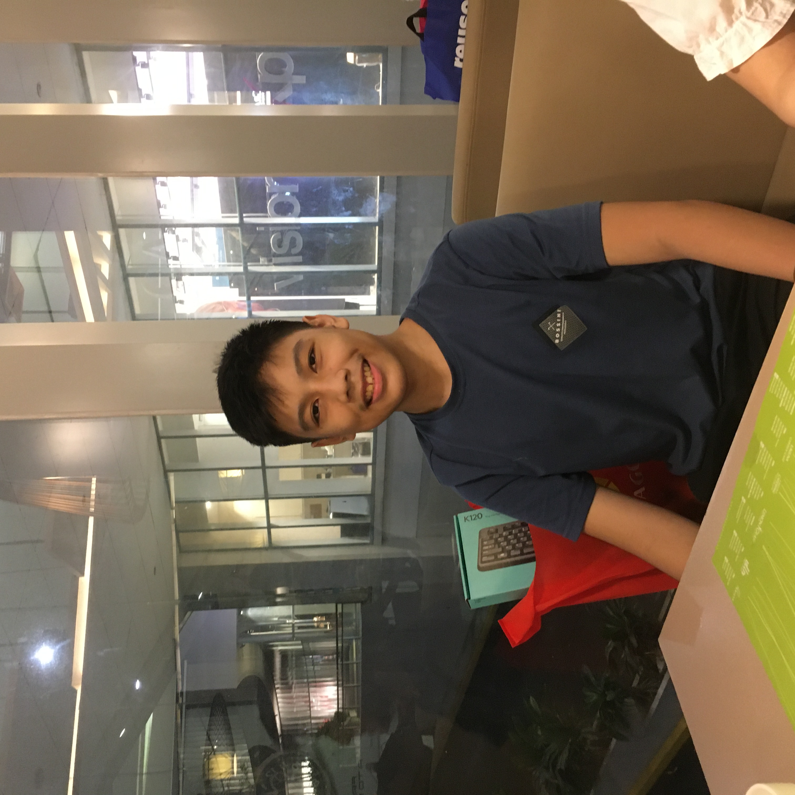

My name is Winsor Jeremiah D. Alpuerto.
I am 14 years old, born on the 7th of October 2008 in Cebu City.
Ever since I was little, I have always been fascinated by technology.
I was 5 years old when I first played my first video game, Plants vs. Zombies, on my family’s tablet.
I remember hiding myself under blankets, playing PVZ late in the night because it was so fun, waking my grandparents sleeping next to me who then scolded me.
A few years later, when I was 9 years old, I began to learn programming because I really wanted to create my own video games.
I found a YouTube video on how to make a very basic, text-based quiz game using the batch script that can be made on notepad.
I based my quiz-game based on random trivia about technology I found on the internet, such as the full word of Wi-Fi or the creator of the Macintosh;
which actually became useful in my computer class when I went back to school. On my 10th birthday, I was given a book by my kind parents to support me in my journey to learn programming,
the book is titled, “Coding for Beginners: Using Python”.
Now, I realize that this book would begin my passion for programming.
After my previous attempts to learn programming has failed,
due to laziness or lack of motivation, my passion was lit again during the summer of 2019.
It was a fun summer day when I was playing video games with my cousins on ROBLOX,an online video-game publishing platform.
As we continued the exciting games on ROBLOX,
I was inspired to create my own games where I and my cousins could play and bond over.
For the next 5 years I have been developing and uploading my own games to the ROBLOX Platform.
As I continued to develop video games, my programming skills have also greatly improved.
Currently, I have uploaded more than 20 games and I am already programming my next project which I am very excited about.
Last summer, I wanted to try something new on programming.
So I temporarily quit developing games and I began to relearn Python, I started learning HTML, JavaScript, SQLite, and CSS.
When school began, I was excited to borrow books again, especially books on programming such as, “A book on C”.
The many programming languages that I have been accumulating over the years were adding knowledge to my skill set, which I can use in the future for my dream job I am most passionate about.

After I finish high school, I would choose computer science as my course for college.
I would love to be a computer scientist as my profession because I really love programming.
I wish to make my own game studio with the same vision I had when I was kid, to make video games that will bring joy to people and form life long bonds.
I also want to make a software development company to help businesses run smoothly; based on my experience helping my grandparents run their old-style store.
In the following years, I would also want to teach programming to the next generation, for them to also experience the joy I had with this art.
So that was my story and the story for my love of programming.Thank you and have a great day!